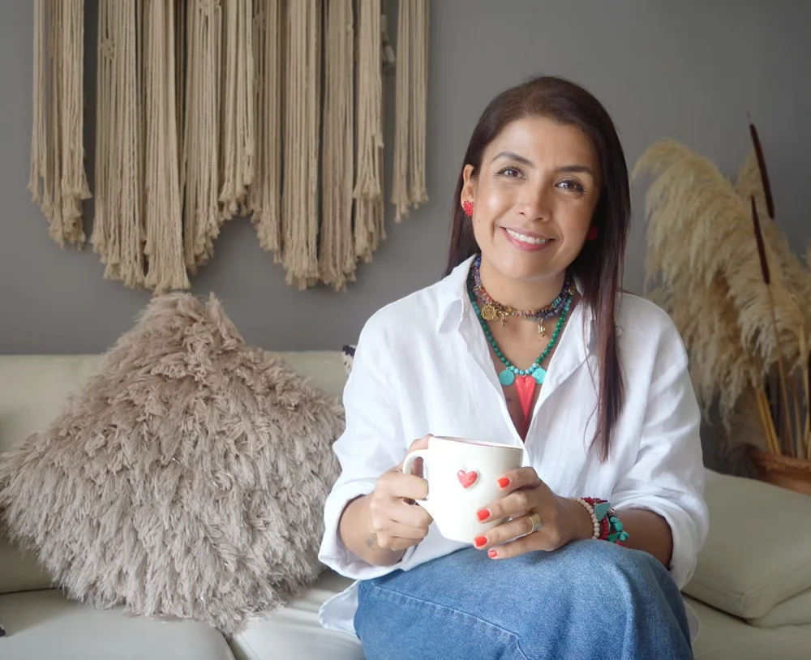

Piezas tejidas nudo a nudo, para ti.
Bolsos, accesorios, decoración y detalles de Navidad. Cada pieza es única y se teje en los colores que elijas.
Ver las piezasQuiero algo personalizadocon calma
Bolso Bahía
Nudos planos que forman una textura firme, nudos mágicos en cordón de brillo y flecos boho.
Maxitula
Una tula grande y resistente que combina con todo y lleva todo lo que necesitas.
Tula Verona
Bolso tipo saquito ajustable con patrones geométricos y cargadera trenzada.
Strap para celular
Tu celular siempre a mano, colgado al hombro o cruzado.
Portamacetas
Llena tu casa de vida colgando tus plantas en tonos tierra que conectan con la naturaleza.
Tapiz Prana
Pieza protagonista de gran formato: texturas, ritmo y acentos de color que transforman una pared.
Tapiz de hojas
Hojas tejidas en tonos suaves para darle calidez a la sala o la habitación.
Mini tapiz de chakras
Un tapiz pequeño lleno de color y significado, ideal para rincones de calma.
Colgante embarrilado
Formas alargadas, trenzados suaves y detalles naturales que transmiten calma y orden.
Cojín tejido
Una pieza tejida con calma para vestir tu sofá con un detalle hecho a mano.
Árbol de Navidad 3D
El protagonista de tu sala esta Navidad: un árbol tejido con volumen y detalles a tu gusto.
Arbolito de mesa
Un árbol pequeño para la mesa, el escritorio o la repisa.
Adornos navideños
Detalles para el árbol que se guardan y se vuelven a colgar cada diciembre.
Angelito tejido
Delicado y lleno de significado: un regalo que cuenta una historia.
Horas de trabajo, nudo a nudo.
Nada de esto sale de una fábrica. Cada pieza pasa por las manos de quien la teje, con hilos elegidos para durar.
¿Tienes una idea? La tejemos.
Cuéntanos qué imaginas y lo hacemos realidad, en tus colores y a tu medida.
- Tapices a la medida de tu pared
- Bolsos en los colores de tu marca
- Recordatorios para eventos y regalos corporativos

Tu pieza en 4 pasos
Elige
Encuentra la pieza que te enamora en el catálogo.
Escríbenos
Toca “Pedir” y te llega un mensaje listo con el nombre de la pieza.
Personaliza
Confirmamos colores, medidas, precio y tiempo de entrega.
Recíbela
Pagas, coordinamos el envío y tu pieza llega a casa.

Aprende a hacer estas piezas desde cero
Casi todo lo que ves aquí se enseña paso a paso en la Escuela de Macramé y en los cursos de Bolsos y Navidad Mágica.
Conocer la EscuelaAntes de pedir
¿Las piezas están listas para entrega?
Cada pieza se teje a mano. Algunas están disponibles para entrega inmediata y otras se hacen por encargo. Al escribirnos te confirmamos disponibilidad y tiempo de entrega.
¿Puedo elegir los colores?
Sí. La mayoría de piezas se pueden tejer en los colores que prefieras. Cuéntanos qué tienes en mente y te mostramos opciones de hilos.
¿Hacen envíos?
Sí, coordinamos el envío contigo por WhatsApp. El costo depende de tu ciudad y se confirma antes del pago.
¿Cómo pago?
Te compartimos los medios de pago disponibles por WhatsApp al confirmar tu pedido.
¿Cómo cuido mi pieza de macramé?
Mantenla lejos de la humedad y del sol directo. Para limpiarla, sacude el polvo o usa un paño húmedo suave; los flecos se peinan con un peine de dientes anchos.
¿Puedo aprender a tejerlas yo?
¡Claro! Casi todas estas piezas se enseñan paso a paso en la Escuela de Macramé y en los cursos de Bolsos y Navidad Mágica.